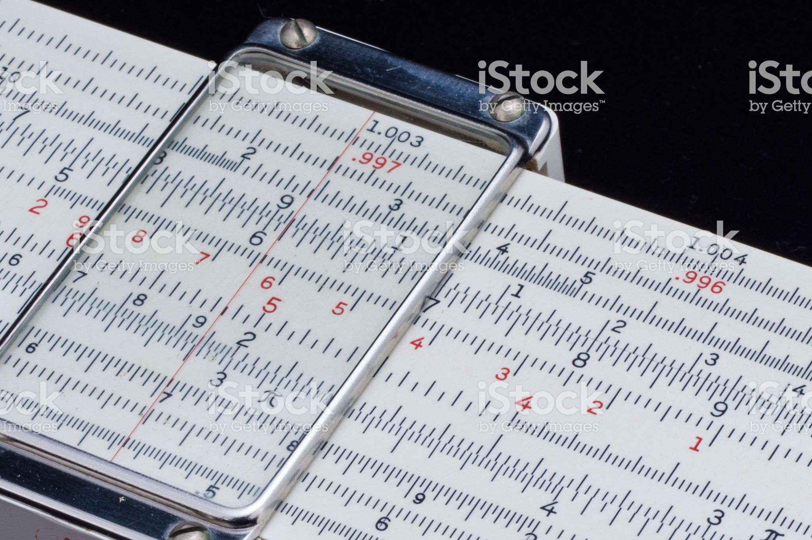

"The abacus (plural abaci or abacuses), also called a counting frame, is a calculating tool that was in use in Europe, China and Russia, centuries before the adoption of the written Hindu–Arabic numeral system. The exact origin of the abacus is still unknown. Today, abacuses are often constructed as a bamboo frame with beads sliding on wires, but originally they were beans or stones moved in grooves in sand or on tablets of wood, stone, or metal..." (Wikipedia)
"The slide rule, also known colloquially in the United States as a slipstick, is a mechanical analog computer. The slide rule is used primarily for multiplication and division, and also for functions such as exponents, roots, logarithms and trigonometry, but typically not for addition or subtraction. Though similar in name and appearance to a standard ruler, the slide rule is not meant to be used for measuring length or drawing straight lines..." (Wikipedia)
"An electronic calculator is typically a portable electronic device used to perform calculations, ranging from basic arithmetic to complex mathematics. The first solid-state electronic calculator was created in the early 1960s...Modern electronic calculators vary from cheap, give-away, credit-card-sized models to sturdy desktop models with built-in printers..." (Wikipedia)